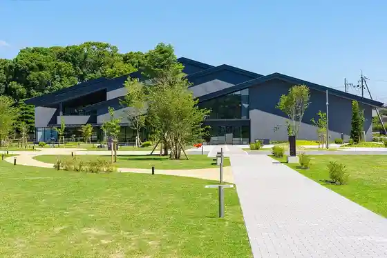

Uji Bunka Center
Uji, Kyoto · 0774-39-9333
O Cha to Uji no Machi Rekishi Park “ Cha Zuna ”
Uji, Kyoto · 0774-24-2700

Byodoin Omotesando
Uji, Kyoto

Byodoin
Uji, Kyoto · 0774-21-2861

Kyotofuritsu Yamashiro Sogo Sports Park (Taiyogaoka)
Uji, Kyoto · 0774-24-1313
Uji Ue Shrine
Uji, Kyoto · 0774-21-4634
Tengase Dam
Uji, Kyoto · 0774-22-2188
Naka Village Tokichi Main Shop
Uji, Kyoto · 0774-22-7800
Uji Genjimonogatari Museum
Uji, Kyoto · 0774-39-9300
Fukuju Sono Uji Cha Workshop
Uji, Kyoto · 050-3152-2930
Uji Shokubutsu Park
Uji, Kyoto · 0774-39-9387
Uji Ei Chashitsu Tsui Otori Iori
Uji, Kyoto · 0774-23-3334
Tsuen Main Shop
Uji, Kyoto · 0774-21-2243
Fukuju Sono Uji Chatei
Uji, Kyoto · 050-3152-2932
Obaku Yamaman Fuku Tera
Uji, Kyoto · 0774-32-3900
Uji Hashi
Uji, Kyoto · 0774-62-0714
Kyotofuritsu Uji Park (to no Shima Tachibana Shima)
Uji, Kyoto · 0774-62-0325
Uji Shrine
Uji, Kyoto · 0774-21-3041
Uji Sado Ba (Takumi no Kan)
Uji, Kyoto · 0774-23-0888
Mimuroto Tera
Uji, Kyoto · 0774-21-2067
Hanaya Shiki Ukifune Sono
Uji, Kyoto · 0774-21-2126
Marukyu Oyama Sono
Uji, Kyoto · 0774-20-0909
Fucha Ryori Hakun Iori
Uji, Kyoto · 0774-32-0700
Koeki Shadanhojin Uji Tourism Association
Uji, Kyoto · 0774-23-3353
Ken Shrine
Uji, Kyoto · 0774-21-3014
Uji Sogo Yagaikatsudo Center (Akutoparu Uji)
Uji, Kyoto · 075-575-3535
Asahi Yaki Sakuto Kan
Uji, Kyoto · 0774-23-2517
Ippan Zaidanhojin Seishonen Bunka Kenshu Dojo
Uji, Kyoto · 0774-32-1365
Uji History Museum
Uji, Kyoto · 0774-39-9260
JR Uji Ekimae Jidosha Chushajo
Uji, Kyoto
San Kyuan Uji Cha Shiryoshitsu
Uji, Kyoto · 0774-21-2636
Hashi Tera (Hojo In)
Uji, Kyoto · 0774-21-2662
Hozo In (Shuzo Ko)
Uji, Kyoto · 0774-31-8026
Uji Kambayashi Memorial Museum
Uji, Kyoto · 0774-22-2509